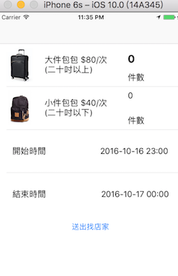
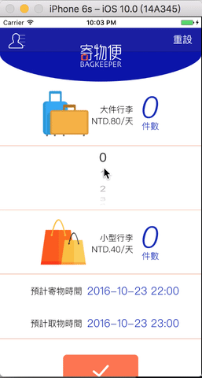

在上一篇提到開發商家地圖和簡介的部分。
本週則是完成畫面最複雜的頁面。
依照設計師的初稿，第一個頁面要能讓使用者選擇寄物件數和寄/取物的時間
我第一版的畫面如下

構想是使用者點選件數或時間文字時，會跑出數字picker或date picker
不囉嗦，先看完成品的操作畫面

為了讓使用者能以最少的動作完成工作，我們將數字或時間選擇的部分做自動收合
時間的部分是參考apple內建的行事曆，更改寄物時間時，上方的時間文字和下方的取物時間會跟著變動;連取物時間的picker也有連動。
整個畫面使用tableview controller完成。使用5個section（包含最下面的送出按鈕），除了最後一個section外，其餘都有2個row，也就是picker的部分。
預設每個section只顯示一個row。當使用者點選某一個section時，會判斷該section的row number，接著改變其值，便能夠做到收合的效果。
而date picker的部分，由於寄物時間的picker會影響到其它三個元件。所以這裡使用notification來通知其它元件。
接下來就是demo day了。這三週比之前上班還累，但也蠻充實的。
希望demo day能夠順利介紹寄物便，為這10週畫下美好的句點！